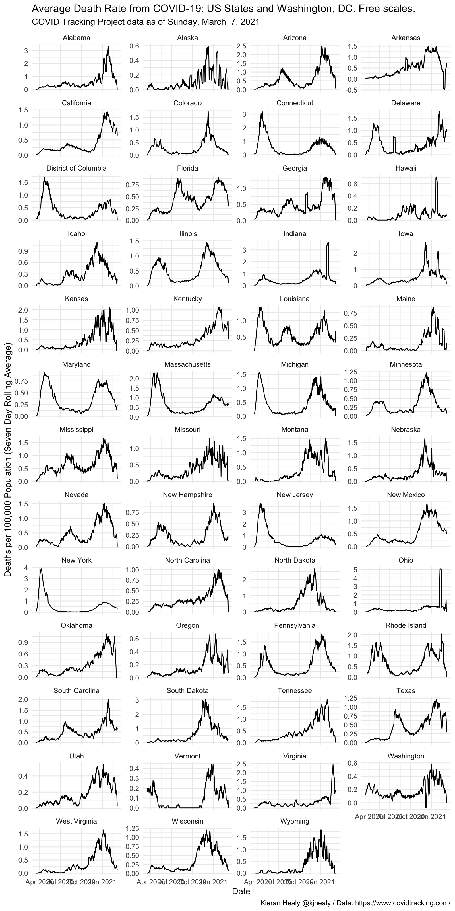
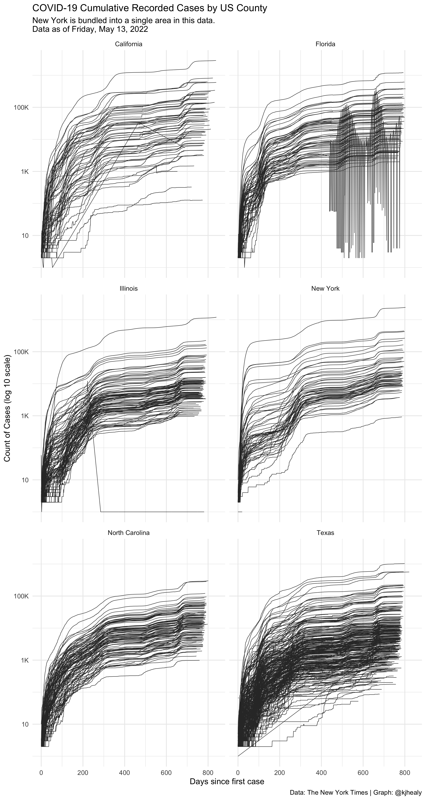

Load the Data
library(tidyverse)
#> ── Attaching packages ─────────────────────────────────────── tidyverse 1.3.0 ──
#> ✔ ggplot2 3.3.3 ✔ purrr 0.3.4
#> ✔ tibble 3.0.4 ✔ dplyr 1.0.2
#> ✔ tidyr 1.1.2 ✔ stringr 1.4.0
#> ✔ readr 1.4.0 ✔ forcats 0.5.0
#> ── Conflicts ────────────────────────────────────────── tidyverse_conflicts() ──
#> ✖ dplyr::filter() masks stats::filter()
#> ✖ dplyr::lag() masks stats::lag()
library(covdata)
#>
#> Attaching package: 'covdata'
#> The following object is masked from 'package:datasets':
#>
#> uspop
library(ggrepel)Data for the United States come from a variety of sources:
- State-level case and mortality data for the United States from the COVID Tracking Project.
- State-level and county-level case and mortality data for the United States from the New York Times.
- Data from the US Centers for Disease Control’s Coronavirus Disease 2019 (COVID-19)-Associated Hospitalization Surveillance.
- State- and national-level reports from the United States National Center for Health Statistics.
COVID Tracking Project data
covus
#> # A tibble: 512,970 x 7
#> date state fips data_quality_gra… measure count measure_label
#> <date> <chr> <chr> <chr> <chr> <dbl> <chr>
#> 1 2021-01-01 AK 02 A positive 45461 Positive Tests
#> 2 2021-01-01 AK 02 A probable_ca… NA Probable Cases
#> 3 2021-01-01 AK 02 A negative 1230289 Negative Tests
#> 4 2021-01-01 AK 02 A pending NA Pending Tests
#> 5 2021-01-01 AK 02 A hospitalize… 79 Currently Hosp…
#> 6 2021-01-01 AK 02 A hospitalize… 1023 Cumulative Hos…
#> 7 2021-01-01 AK 02 A in_icu_curr… NA Currently in I…
#> 8 2021-01-01 AK 02 A in_icu_cumu… NA Cumulative in …
#> 9 2021-01-01 AK 02 A on_ventilat… 6 Currently on V…
#> 10 2021-01-01 AK 02 A on_ventilat… NA Cumulative on …
#> # … with 512,960 more rowsDraw a log-linear graph of cumulative reported US cases.
## Which n states are leading the count of positive cases or deaths?
top_n_states <- function(data, n = 5, measure = c("positive", "death")) {
meas <- match.arg(measure)
data %>%
group_by(state) %>%
filter(measure == meas, date == max(date)) %>%
drop_na() %>%
ungroup() %>%
top_n(n, wt = count) %>%
pull(state)
}
state_cols <- c("gray70", "#195F90FF", "#D76500FF", "#238023FF", "#AB1F20FF", "#7747A3FF",
"#70453CFF", "#D73EA8FF", "#666666FF", "#96971BFF", "#1298A6FF", "#6F9BD6FF",
"#FF952DFF", "#66CF51FF", "#FF4945FF", "#A07DBAFF", "#AC7368FF", "#EF69A2FF",
"#9F9F9FFF", "#CACA56FF", "#61C3D5FF")
covus %>%
group_by(state) %>%
mutate(core = case_when(state %nin% top_n_states(covus) ~ "",
TRUE ~ state),
end_label = ifelse(date == max(date), core, NA)) %>%
arrange(date) %>%
filter(measure == "positive", date > "2020-03-09") %>%
ggplot(aes(x = date, y = count, group = state, color = core, label = end_label)) +
geom_line(size = 0.5) +
geom_text_repel(segment.color = NA, nudge_x = 0.2, nudge_y = 0.1) +
scale_color_manual(values = state_cols) +
scale_x_date(date_breaks = "1 week", date_labels = "%b %e" ) +
scale_y_continuous(trans = "log2",
labels = scales::comma_format(accuracy = 1),
breaks = 2^c(seq(1, 20, 1))) +
guides(color = FALSE) +
labs(title = "COVID-19 Cumulative Recorded Cases by US State",
subtitle = paste("Data as of", format(max(covus$date), "%A, %B %e, %Y")),
x = "Date", y = "Count of Cases (log 2 scale)",
caption = "Data: COVID Tracking Project, http://covidtracking.com | Graph: @kjhealy") +
theme_minimal()
#> Warning: Transformation introduced infinite values in continuous y-axis
#> Warning: Transformation introduced infinite values in continuous y-axis
#> Warning: Removed 24 row(s) containing missing values (geom_path).
#> Warning: Removed 16602 rows containing missing values (geom_text_repel).
Calculating daily counts
The COVID Tracking Project reports cumulative counts for key measures such as positive tests and deaths. For example, for New York State:
measures <- c("positive", "negative", "death")
covus %>%
filter(measure %in% measures, state == "NY") %>%
select(date, state, measure, count) %>%
pivot_wider(names_from = measure, values_from = count)
#> # A tibble: 306 x 5
#> date state positive negative death
#> <date> <chr> <dbl> <dbl> <dbl>
#> 1 2021-01-01 NY 990711 24513602 30208
#> 2 2020-12-31 NY 974214 24310846 30040
#> 3 2020-12-30 NY 957412 24111061 29905
#> 4 2020-12-29 NY 943990 23969534 29756
#> 5 2020-12-28 NY 932552 23820808 29629
#> 6 2020-12-27 NY 922145 23706349 29511
#> 7 2020-12-26 NY 914522 23583673 29396
#> 8 2020-12-25 NY 903716 23393037 29270
#> 9 2020-12-24 NY 891270 23178923 29149
#> 10 2020-12-23 NY 878702 22965195 29016
#> # … with 296 more rowsTo calculate daily counts from these cumulative measures, use lag().
covus %>%
filter(measure %in% measures, state == "NY") %>%
select(date, state, measure, count) %>%
pivot_wider(names_from = measure, values_from = count) %>%
mutate(across(positive:death, ~.x - lag(.x, order_by = date),
.names = "daily_{col}"))
#> # A tibble: 306 x 8
#> date state positive negative death daily_positive daily_negative
#> <date> <chr> <dbl> <dbl> <dbl> <dbl> <dbl>
#> 1 2021-01-01 NY 990711 24513602 30208 16497 202756
#> 2 2020-12-31 NY 974214 24310846 30040 16802 199785
#> 3 2020-12-30 NY 957412 24111061 29905 13422 141527
#> 4 2020-12-29 NY 943990 23969534 29756 11438 148726
#> 5 2020-12-28 NY 932552 23820808 29629 10407 114459
#> 6 2020-12-27 NY 922145 23706349 29511 7623 122676
#> 7 2020-12-26 NY 914522 23583673 29396 10806 190636
#> 8 2020-12-25 NY 903716 23393037 29270 12446 214114
#> 9 2020-12-24 NY 891270 23178923 29149 12568 213728
#> 10 2020-12-23 NY 878702 22965195 29016 11937 192424
#> # … with 296 more rows, and 1 more variable: daily_death <dbl>Draw a graph of the weekly rolling average death rate, by state
state_pops <- uspop %>%
filter(sex_id == "totsex", hisp_id == "tothisp") %>%
select(state_abbr, statefips, pop, state) %>%
rename(name = state,
state = state_abbr, fips = statefips) %>%
mutate(state = replace(state, fips == "11", "DC"))
## Using a convenience function to do something similar
## to the lambda version above
get_daily_count <- function(count, date){
count - lag(count, order_by = date)
}
covus %>%
filter(measure == "death", state %in% unique(state_pops$state)) %>%
group_by(state) %>%
mutate(
deaths_daily = get_daily_count(count, date),
deaths7 = slider::slide_dbl(deaths_daily, mean, .before = 7, .after = 0, na.rm = TRUE)) %>%
left_join(state_pops) %>%
filter(date > lubridate::ymd("2020-03-15")) %>%
ggplot(mapping = aes(x = date, y = (deaths7/pop)*1e5)) +
geom_line(size = 0.5) +
scale_y_continuous(labels = scales::comma_format(accuracy = 1)) +
facet_wrap(~ name, ncol = 4) +
labs(x = "Date",
y = "Deaths per 100,000 Population (Seven Day Rolling Average)",
title = "Average Death Rate from COVID-19: US States and Washington, DC",
subtitle = paste("COVID Tracking Project data as of", format(max(covnat$date), "%A, %B %e, %Y")),
caption = "Kieran Healy @kjhealy / Data: https://www.covidtracking.com/") +
theme_minimal()
#> Joining, by = c("state", "fips")
Draw a graph of the weekly rolling average death rate, by state, with free y-axes in the panels
covus %>%
filter(measure == "death", state %in% unique(state_pops$state)) %>%
group_by(state) %>%
mutate(
deaths_daily = get_daily_count(count, date),
deaths7 = slider::slide_dbl(deaths_daily, mean, .before = 7, .after = 0, na.rm = TRUE)) %>%
left_join(state_pops) %>%
filter(date > lubridate::ymd("2020-03-15")) %>%
ggplot(mapping = aes(x = date, y = (deaths7/pop)*1e5)) +
geom_line(size = 0.5) +
facet_wrap(~ name, ncol = 4, scales = "free_y") +
labs(x = "Date",
y = "Deaths per 100,000 Population (Seven Day Rolling Average)",
title = "Average Death Rate from COVID-19: US States and Washington, DC. Free scales.",
subtitle = paste("COVID Tracking Project data as of", format(max(covnat$date), "%A, %B %e, %Y")),
caption = "Kieran Healy @kjhealy / Data: https://www.covidtracking.com/") +
theme_minimal()
#> Joining, by = c("state", "fips")
Draw a graph of cumulative reported US deaths, aggregated to the national level
covus %>%
filter(measure == "death") %>%
group_by(date) %>%
summarize(count = sum(count, na.rm = TRUE)) %>%
ggplot(aes(x = date, y = count)) +
geom_line(size = 0.75) +
scale_x_date(date_breaks = "2 weeks", date_labels = "%b %e" ) +
scale_y_continuous(labels = scales::comma, breaks = seq(0, 250000, 50000)) +
labs(title = "COVID-19 Cumulative Recorded Deaths in the United States",
subtitle = paste("Data as of", format(max(covus$date), "%A, %B %e, %Y"), "Recorded counts underestimate total mortality."),
x = "Date", y = "Count of Deaths",
caption = "Data: COVID Tracking Project, http://covidtracking.com | Graph: @kjhealy") +
theme_minimal()
#> `summarise()` ungrouping output (override with `.groups` argument)
State-Level and County-Level (Cumulative) Data from the New York Times
State-level table
nytcovstate
#> # A tibble: 16,789 x 5
#> date state fips cases deaths
#> <date> <chr> <chr> <dbl> <dbl>
#> 1 2020-01-21 Washington 53 1 0
#> 2 2020-01-22 Washington 53 1 0
#> 3 2020-01-23 Washington 53 1 0
#> 4 2020-01-24 Illinois 17 1 0
#> 5 2020-01-24 Washington 53 1 0
#> 6 2020-01-25 California 06 1 0
#> 7 2020-01-25 Illinois 17 1 0
#> 8 2020-01-25 Washington 53 1 0
#> 9 2020-01-26 Arizona 04 1 0
#> 10 2020-01-26 California 06 2 0
#> # … with 16,779 more rowsCounty-level table
nytcovcounty
#> # A tibble: 888,062 x 6
#> date county state fips cases deaths
#> <date> <chr> <chr> <chr> <dbl> <dbl>
#> 1 2020-01-21 Snohomish Washington 53061 1 0
#> 2 2020-01-22 Snohomish Washington 53061 1 0
#> 3 2020-01-23 Snohomish Washington 53061 1 0
#> 4 2020-01-24 Cook Illinois 17031 1 0
#> 5 2020-01-24 Snohomish Washington 53061 1 0
#> 6 2020-01-25 Orange California 06059 1 0
#> 7 2020-01-25 Cook Illinois 17031 1 0
#> 8 2020-01-25 Snohomish Washington 53061 1 0
#> 9 2020-01-26 Maricopa Arizona 04013 1 0
#> 10 2020-01-26 Los Angeles California 06037 1 0
#> # … with 888,052 more rowsDraw a log-linear graph of cumulative US cases by county.
nytcovcounty %>%
mutate(uniq_name = paste(county, state)) %>% # Can't use FIPS because of how the NYT bundled cities
group_by(uniq_name) %>%
mutate(days_elapsed = date - min(date)) %>%
ggplot(aes(x = days_elapsed, y = cases, group = uniq_name)) +
geom_line(size = 0.25, color = "gray20") +
scale_y_log10(labels = scales::label_number_si()) +
guides(color = FALSE) +
facet_wrap(~ state, ncol = 5) +
labs(title = "COVID-19 Cumulative Recorded Cases by US County",
subtitle = paste("New York is bundled into a single area in this data.\nData as of", format(max(nytcovcounty$date), "%A, %B %e, %Y")),
x = "Days since first case", y = "Count of Cases (log 10 scale)",
caption = "Data: The New York Times | Graph: @kjhealy") +
theme_minimal()
#> Don't know how to automatically pick scale for object of type difftime. Defaulting to continuous.
#> Warning: Transformation introduced infinite values in continuous y-axis